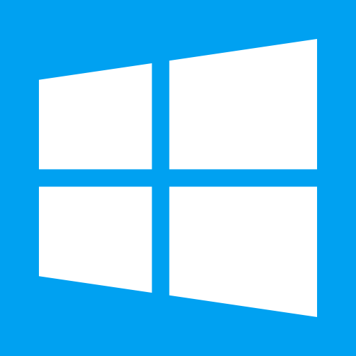
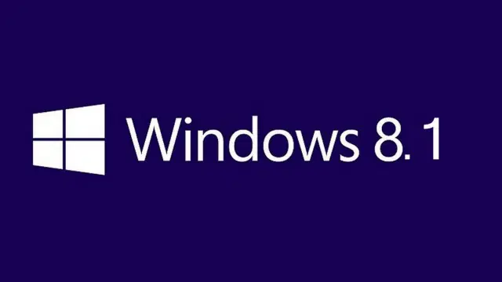
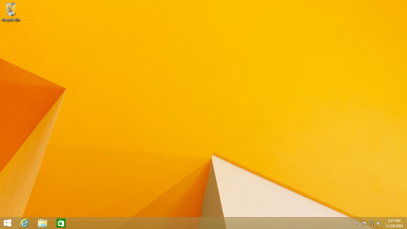

Windows 8.1

Wersja: Windows 8.1 Pro
Data premiery: 17 Października 2013
Architektura: 64-bit / 32-bit
Windows 8.1 był próbą naprawienia kontrowersji po Windows 8. Dodano przycisk Start (a przynajmniej jego namiastkę), poprawiono stabilność i dano szansę użytkownikom desktopowym poczuć się mniej jak na tablecie. Był... lepszy, ale nadal dziwnie kafelkowy.
🛑 Ten system operacyjny od dnia 10 stycznia 2013 r. nie jest już wspierany przez Microsoft.
Korzystanie z niego może wiązać się z zagrożeniem bezpieczeństwa oraz brakiem aktualizacji.

🔧 Wymagania sprzętowe
- Procesor: 1 GHz z obsługą PAE, NX i SSE2
- Pamięć RAM: 1 GB (32-bit) lub 2 GB (64-bit)
- Dysk twardy: 16 GB (32-bit) lub 20 GB (64-bit)
- Karta graficzna: Microsoft DirectX 9 z WDDM
💽 Instrukcja instalacji
- Pobierz obraz ISO poniżej.
- Stwórz bootowalny pendrive (np. za pomocą Rufus).
- Uruchom komputer z USB i wybierz język oraz wersję systemu.
- Wybierz typ instalacji (aktualizacja lub czysta instalacja).
- Daj się porwać nowoczesnemu ekranowi startowemu 🎨
📦 Plik ISO
Pobierz ISO